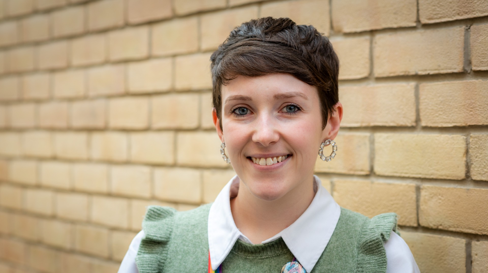

she/her
Senior Innovation Research Associate
University of Bristol
bethm.stokes@bristol.ac.uk
About Me
I currently work as a Senior Innovation Research Associate with the SUM4Products Network, based in the School of Engineering Mathematics and Technology at the University of Bristol. Prior to this I was studying for my PhD with the SAMBa CDT at the University of Bath.
My research to date has focused on modelling the collective behaviour of systems of interacting individuals using a wide range of mathematical modelling techniques. However my research and mathematical interests span a range of applications across biological, social and industrial problems.
I am a passionate advocate for women and under-represented groups in STEM. Outside of mathematics, I can often be found reading, baking, knitting, or on long dog walks with my Border Terrier Daphne.
Outreach
I have had the pleasure of being involved in a number of outreach events and initiatives during my career so far. Find out more about the fantastic work they are doing using the links below!
Upcoming Events
Check back here for any upcoming talks and events!
SUM4Products Study Group - University of Birmingham (20th - 24th April 2026)
SUM4Products Network Annual Meeting - University of Edinburgh (17th - 18th September 2026)
The EPSRC funded SUM4Products Network aims to drive innovation in formulation science and engineering by connecting academics and industry representatives.
In my role as a Senior Innovation Research Associate (InRA) with the network, I will have the opportunity to work on a variety of impact-driven industry challenges in formulation engineering. Watch this space!
My PhD project, supervised by Dr. Richard James and Prof. Tim Rogers, developed a series of mathematical models that work towards enhancing our understanding of how individual interactions and behaviour feed into population-level structures and movement. In particular, exploring how social interactions between individuals, and especially those driven by sexual conflict, can give rise to large scale spatial patterns and movement in animal populations.
During the project, I also had the opportunity to devise and carry out my own experiments alongside external supervisors Dr. Safi Darden and Prof. Darren Croft at the University of Exeter. These aimed to explore the effect of sex ratio and density on the movement decisions of Trinidadian Guppies, our particular species of interest.
During my undergraduate degree, I had the opportunity to complete two research internships. The first of which, funded by EPSRC, was an in depth study of the Cucker-Smale and Cucker-Dong models of collective animal motion. I subsequently completed both my third year and Master's projects on the topic, both of which were supervised by Dr. Galane J. Luo. In the latter, I devised a new, agent-based model of collective motion, specifically designed to recreate the murmuration phenomena commonly observed in large flocks of starlings.
During my undergraduate studies, I was also part of a British Academy funded project which set out to develop a novel, agent-based model of human opinion dynamics. Agents in the model update their opinions based on interactions with others, providing the pair exceeds a certain "affinity threshold". The concept of memory was also introduced, creating a non-Markovian process of opinion updating. The model successfully recreates many socio-psychological phenomena, such as extremism, segregation and oscillatory opinions, more details can be found in our publication in the Journal of Mathematical Sociology.
I completed my PhD in Statistical Applied Mathematics with the SAMBa CDT at the University of Bath in 2026. My PhD Thesis was titled "Collective Motion Driven by Social Interactions in Animals" and was supervised by Dr. Richard James and Prof. Tim Rogers, with external supervisors Dr. Safi Darden and Prof. Darren Croft at the University of Exeter. I also obtained an MRes qualification during my first year of study.
I graduated from the University of Birmingham with a First Class MSci Mathematics degree in July 2021. During my time at Birmingham, I worked on a number of undergraduate research projects, developing a keen interest in mathematical biology and in particular, topics with interdisciplinary or real-world applications.
Stokes, B.M., Rogers, T. and James, R., 2026. Sex ratio response drives (anti-)correlated population fluctuations. (in preparation)